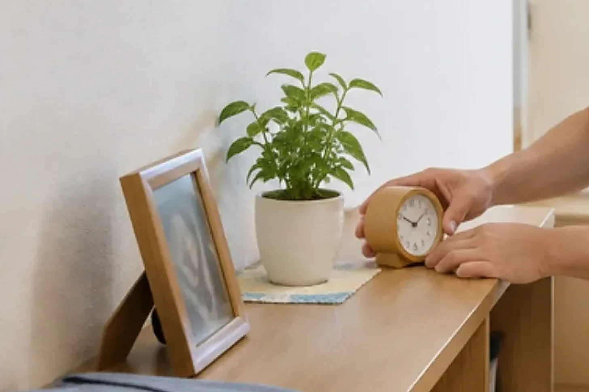

CLEAN CARE JOURNAL / 暮らしから考える清掃
きれいになった部屋で、いつもの物が見つからない。

利用者の「いつも」を残す清掃
棚の上の物が整然と並び、床が明るくなった。それでも、暮らしている人が困ることはあります。いつもの場所にコップがない。手を伸ばす位置に時計がない。掃除する側の整った配置と、使う側の分かりやすい配置は、同じとは限りません。
施設の居室は作業場所である前に、その人の生活の場所です。私物を動かすときは、施設の担当者と本人に確かめる。片づけの都合だけで捨てたり、別の引き出しへ移したりしない。この順番を、清掃の段取りに含めたいと考えます。
断られたら、説得より一度立ち止まる
認知症介護研究・研修センターの公開事例63には、利用者の訴えへの対応をチームで見直した例があります。清掃の成功事例ではありません。相手の気持ちを職員の都合だけで解釈しない、という検討の参考になります。公開事例
嫌がる理由は、痛み、疲れ、知らない人への緊張、予定が分からないことなど、人によって違います。清掃スタッフが診断するのではなく、いったん止まり、普段の関わりを知る施設職員に相談します。拒否を認知症のせいと決めつけないことも大切です。
戻す場所までが作業の範囲
ここからは、清掃計画への応用案です。動かしてよい物と触らない物を分ける。必要な移動は本人に分かる方法で知らせる。終わったら、担当職員と配置を確かめる。本人が使う眼鏡や呼出し機器などは勝手に操作せず、施設側に確認してもらいます。
写真で記録する場合も、部屋を丸ごと撮る必要があるか考えます。氏名、薬、書類、家族写真が写ることもあります。撮影範囲と保存先を施設と決め、許可なく持ち出さない方法を選びます。
今日の持ち帰り
次の清掃で確かめたいのは、「何をきれいにするか」に加えて「何を変えないか」です。急いで全面を終えるより、本人が安心できる範囲から分けて進める方法もあります。衛生上の危険がある場合は放置せず、施設の責任者が対応を判断します。
意思決定を支える基本的な考え方は、厚生労働省の認知症意思決定支援ガイドラインも参考になります。この記事は個別のケア計画や医療判断を代わりに決めるものではありません。